Palermo Noir
Hidden roles on your phones. The town on your TV.
Everybody plays, even the narrator
Palermo Noir is the hidden-role game Greeks know as Palermo, a cousin of Mafia and Werewolf. It always needed one friend who sat out: the narrator who knew every secret and counted the votes. Here the game takes that job. Every phone holds its player's secret card, the TV shows the town square, and a deep noir voice runs every night and every day, in English or Greek.

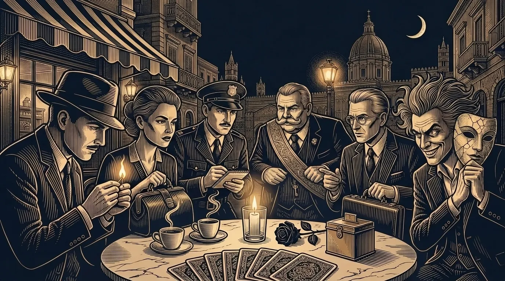
One phone each, one TV for the room
You need 6 to 14 players, a phone each, and a screen the whole room can see: a smart TV's browser or a laptop on the TV. Nobody installs anything.
- Open a room. The host opens Palermo Noir on their phone and taps Create a room.
- Put the town on the TV. Open vgraphics.gr/tv in the TV's browser and type the room code. Friends scan the QR code on the screen to join.
- Choose the rules. Classic, Quick or Full house, or your own: the host picks the roles and the timers, and the TV shows the roles in play.
- Hold to see your card. Everyone gets a secret role. Your card shows only while you hold it, and every card has the same frame.


The town sleeps, two taps each
The TV goes dark and the narrator sends the town to sleep. Every phone asks for two taps: your role's move, or who you trust, then who you suspect. So every phone looks the same, and nobody can tell who did what. On the first night the killers only meet each other and the Police Officer learns the Known Killer's face; from the second night the killers choose a victim.
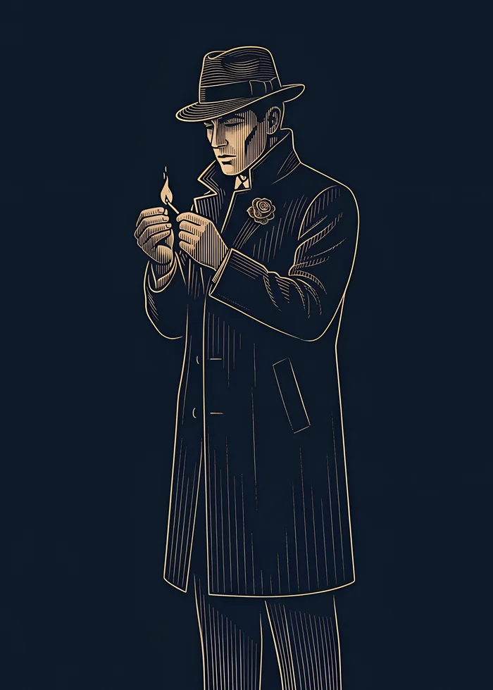
KillersKnown Killer
Every night you and your partners choose a victim. The Police Officer knows who you are.
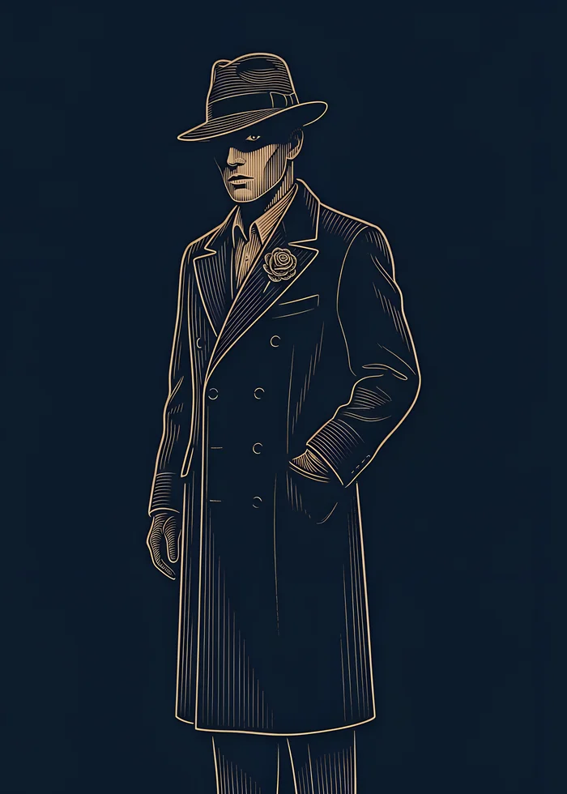
KillersHidden Killer
Every night you and your partners choose a victim. The Police Officer doesn't know you.
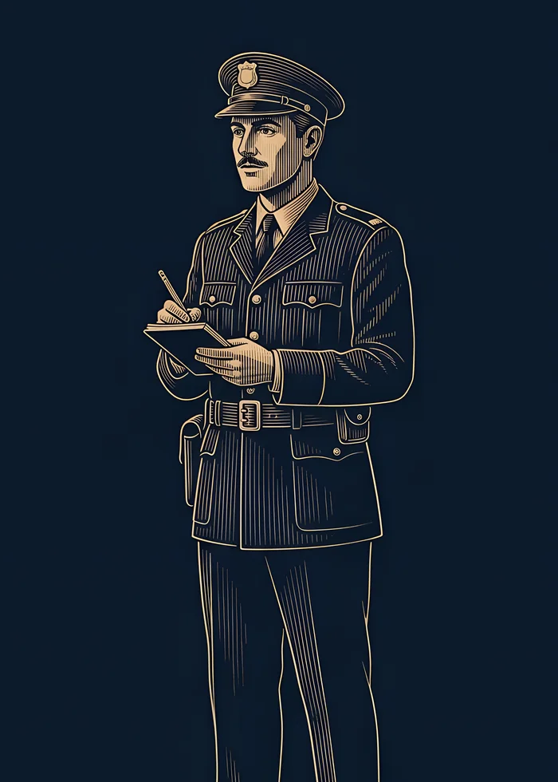
TownPolice Officer
On the first night you learn who the Known Killer is. Steer the town without giving yourself away.
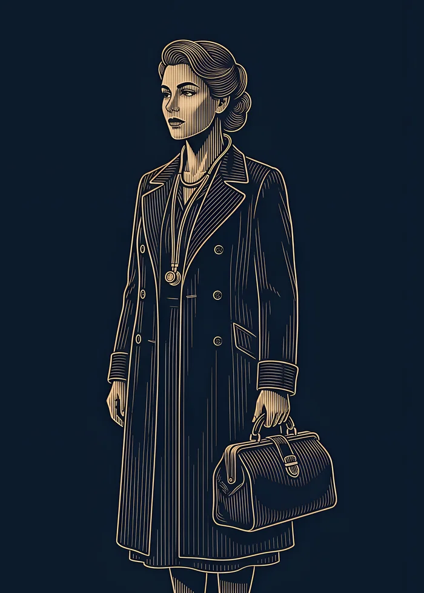
TownDoctor
From the second night, protect one player from the killers, never the same one two nights running.
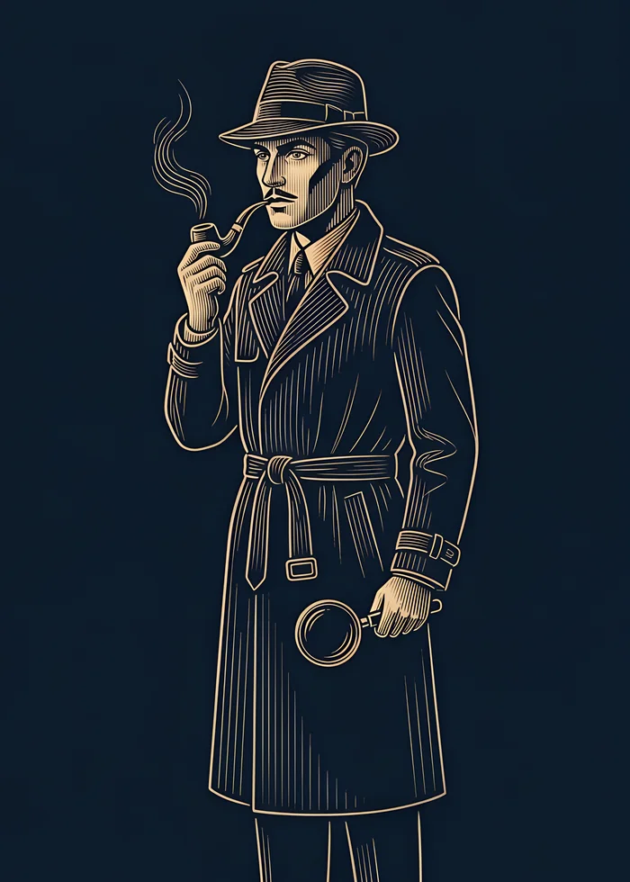
Town · extraDetective
Each night, check one player: killer or not.
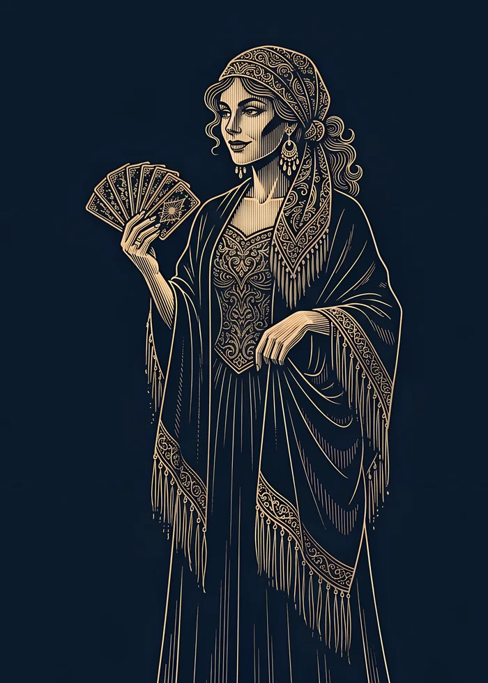
Town · extraSeer
Once a game, at night, learn one player's exact role.
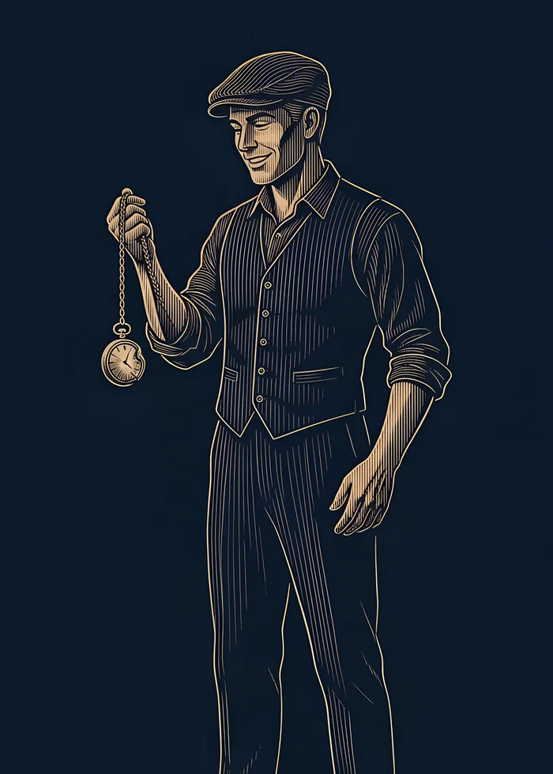
Town · extraBulletproof
You survive the killers' first attack on you, and only you are told.
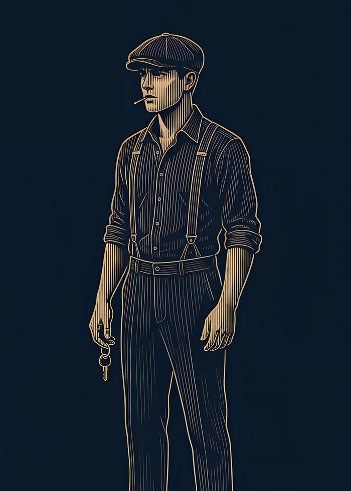
Killers · extraHenchman
You know the killers, but they don't know you. You win with them.

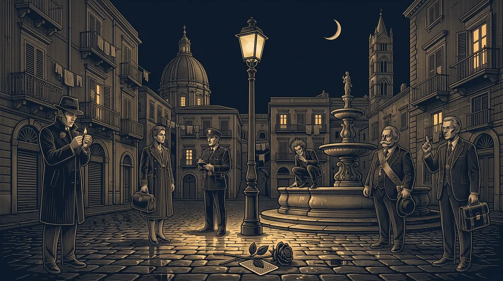
Accuse, argue, vote
At dawn the narrator tells the town who the killers found, or that the night passed without a murder, and the TV shows the town's rumour: the most suspected name. Then the room argues, and votes someone out of town.
- The accusation boardPoint at a suspect from your phone; the arrows and counts show live on the TV.
- Open or secret votesWatch every vote arrive as an arrow, or keep the ballots secret until the end.
- Ties and last wordsTied players defend themselves and the town votes again. Whoever goes out may say a few last words.
- The night announcerThe first player out sees every role from then on and tells the dawns, as Greek groups always did.
- Town
Citizen
No power: listen, accuse, and vote the killers out. Citizens come as a baker, a fisherman, a seamstress and a kiosk owner.
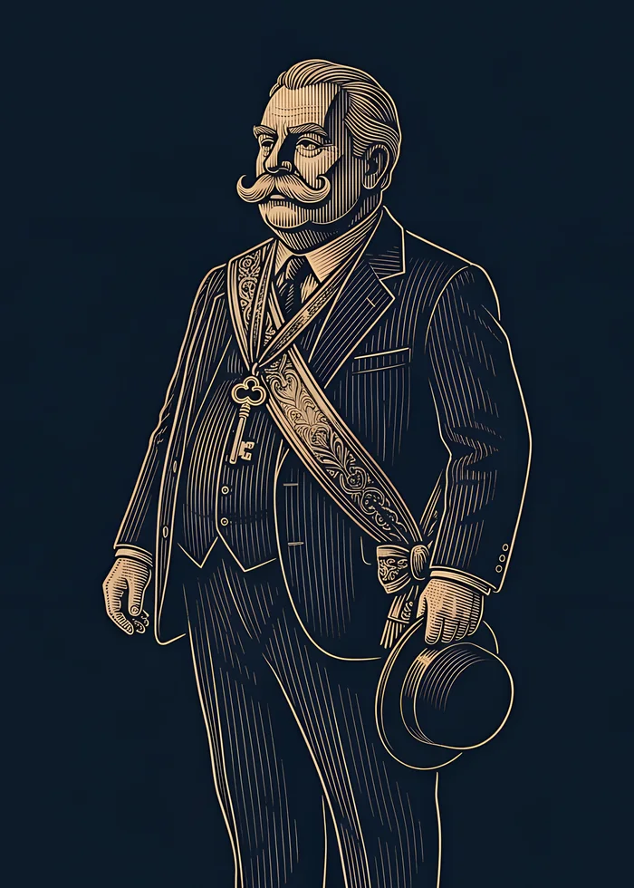
Town · extraMayor
Reveal yourself during a day: from then on your vote counts twice.
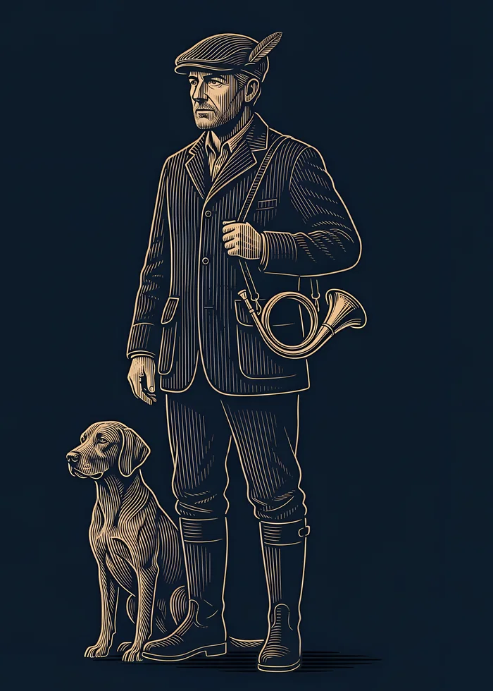
Town · extraHunter
When you're out, by vote or by night, you take one player with you.
- Town · extra
Lawyer
You're dealt 5 of 17 power cards, such as Objection!, Alibi and Appeal, and keep 2. Each one works once.
- Killers · extra
Kamikaze
You're with the killers. Once, during a day, you can take one player down with you.
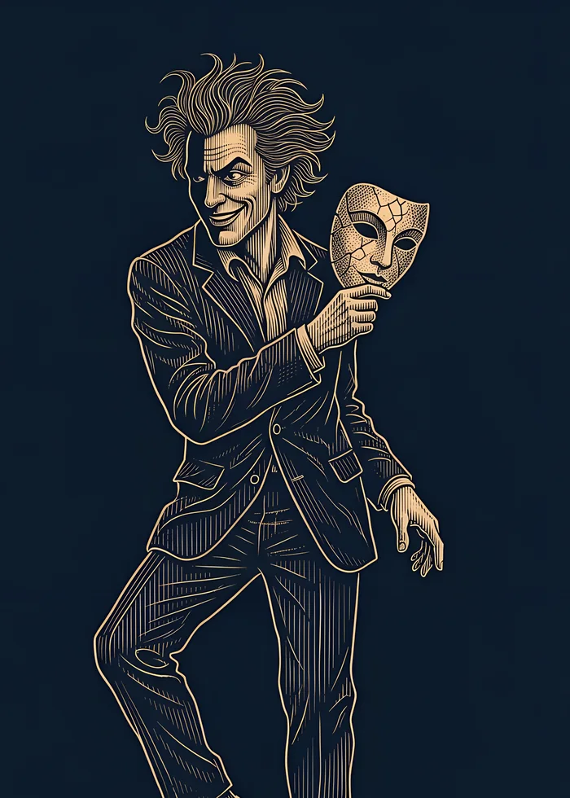
Solo · extraMadman
You win alone if the town votes you out, and that ends the game.

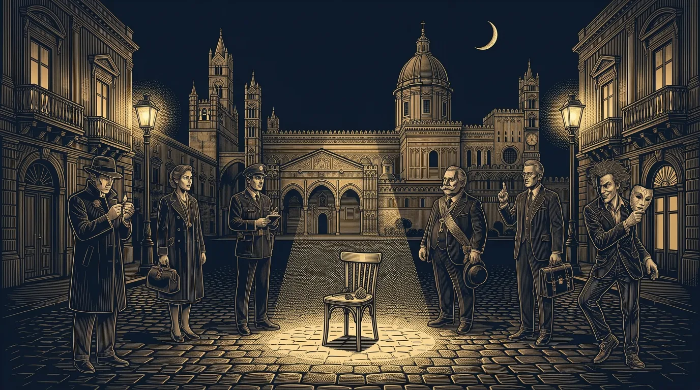
The truth comes out
The game ends the moment one side has won: the town when every killer is out, the killers when they match everyone else, the Madman alone if the town votes him out. Then the TV tells the whole story, and everyone stays in the room to play again.
- Every card turnedOne by one, killers last, then the winners' banner.
- The story of every nightWho the killers chose, who the Doctor saved, and who voted whom, secret votes included.
- AwardsThe sharpest eye, the best liar, the lifesaver and the survivor.
- XP and achievementsEvery game counts on your VHub profile, in every VGraphics game.

Listen to the soundtrack
The music of an evening in Palermo, in the order you hear it: a 1950s Sicilian noir chamber orchestra with staccato strings, clarinet, mandolin and accordion. Hushed for the night, sunny but suspicious at noon, relentless for the vote, and a theme for whoever wins. Press play and keep reading; a small player stays with you down the page.

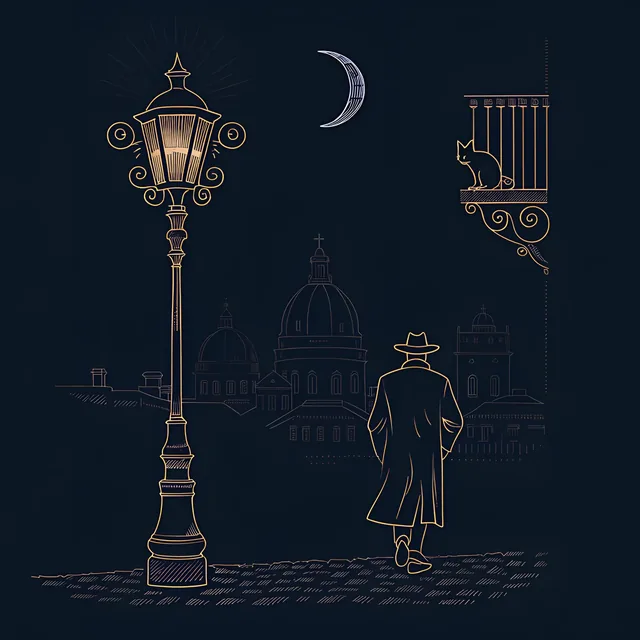
Track 1 of 9Main Theme

- Everybody playsThe game deals the cards, runs the nights, counts the votes and keeps the rules, so nobody sits out to narrate.
- A noir narratorA deep voice on the TV tells every night and every dawn. It never says a name: the names are on the screen.
- No secret leaksEvery phone shows the same screens and asks for the same taps at night, and your card shows only while you hold it.
- Any TV, nothing to installA smart TV's browser or a laptop on the TV, and the phones you already have.
- English or GreekThe narrator, the cards and every screen, in the host's language.
- Free, every roleUp to 14 players with every role in. Ads only between games, never during one.

For ages 13 and up
Each phone gives its year of birth once, and only an age group is kept, never the year. Players join as a guest or with their VHub name, and the TV signs in as a screen, never as a person.

Gather your town
Palermo Noir comes to the web first, then to Android. Free, for 6 to 14 players with a phone each and one TV.